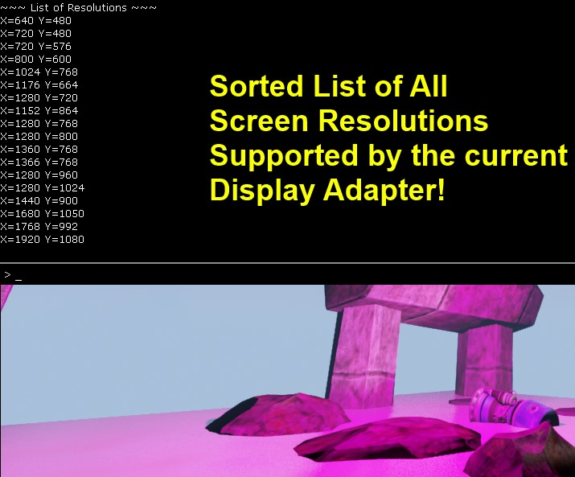

The Solus Project
Contents
Game Overview
Solus is a single player exploration and survival game, experienced in first person and developed in Unreal Engine 4. It is set on a mysterious and uninhabited alien planet.
With Earth on the brink of destruction you are sent to explore a distant planet. After 20 years of space travel you arrive but experience a catastrophic landing. With your team members dead and your equipment destroyed you have no ways of communicating with - or receiving help from an earth that might no longer exist...You are completely and utterly alone.
Core Gameplay Features
- Explore: Survive through exploration. Unlock the strange planet's underlying secrets. Are you sure you are the first one here?
- Scavenge: Aid your survival and rebuild a communication device through the scavenging of useful items you come across.
- Survive: The planet is hostile to your presence. The planet is your enemy. Survive tornadoes, storms, volcanoes, meteors, lighting, extreme temperature changes and so on.
Solus Videos
The World of Solus
<youtube> https://www.youtube.com/watch?v=lOqHpj71anw
Features and Development
- Immersion: Strong focus on atmosphere and immersion. The planet is to be captivatingly beautiful, but its dangers very real.
- Oculus Rift: Supported for total immersion.
- Atmosphere: Fully dynamic atmosphere. Temperature changes. Day and night. Tides. Winds. Dynamic weather. Disasters.
- Extendibility: Extremely modular workflow within the game will allow anyone to easily create levels and areas to explore.
- The Ball: Spiritual successor to the award-winning UE3 title, The Ball . Same universe, same atmosphere.
The Planet
Before you crash landed, you managed to gather this information via your ship's scanners:
- The planet has a suitable atmosphere and houses large quantities of water, but is barren and mostly made up of rocks and desert.
- It is circled by two moons, one large and one small with the big moon affecting the tide.
- One sun.
- Days are hot (40C and above). Nights are cold (-35C and below). Vegetation is red.
- Large number of caverns present. Different types of caverns depending on the depth you're at. Normal stone caverns at the top, ice in the middle, and lava at the bottom.
The Solus Project
The Solus Project are tutorials based on the content of Solus.
Work on Solus started in July 2013, and we have a team of about 4 to 5 people working on this off and on. The game is the brainchild of Hourences, who previously designed and created the Unreal Engine 3 game The Ball.
Solus Example Project
We stripped down Solus to the essentials and wrapped it up in a Solus Example project, which I am releasing for free.
This free project contains:
- My folder structure and naming conventions
- Some all purpose meshes and textures.
- Over a dozen of my Light IES Textures
- A Material Function Library with 20′ish material setups I use often.
- Some of my material setups
- My entire day and night alien sky system (!) – No weather is included in it though.
- The Blueprints for the player and various other key parts.
- Some of my sounds, effects, and so on.
- https://drive.google.com/file/d/0B9LZWZkhLRtPZ1hZTnVXVlV0UUU/edit?usp=sharing
- https://dl.dropboxusercontent.com/u/2300830/SolusExample.zip
Overview Videos
Four free videos are available online that give an overview on how we approached building the game and setting everything up, with most of the focus on Blueprint scripting. Shows just how far you can go, and what kind of tips and tricks are possible.
- Unreal Engine 4 presentation at the Swedish Game Awards - March 8 2014 - https://www.youtube.com/watch?v=ZxrcwNGnXZc
- Solus Overview video Part 1 - Content and Level development - https://www.youtube.com/watch?v=8SxTqlom3Fg
- Solus Overview video Part 2 - Blueprint and the Sky - https://www.youtube.com/watch?v=KDOhBMaa6Vs
- Solus Overview video Part 3 - Closing words and Various - https://www.youtube.com/watch?v=iX8OXU3Ka7Q
<youtube>
https://www.youtube.com/watch?v=JFZCp4xsPmow
In-depth Videos
- The Solus Project – Level Building Introduction Preview – https://www.youtube.com/watch?v=5yuz7_G69Rs
- Using the modular and easy to use modular environment assets from Solus, this video introduces you to everything you need to know to build basic environments in Unreal Engine 4. Besides covering how to build environments using modular meshes, the video also goes over how to create a landscape, apply foliage, how to best apply the UE4 reflection system, lighting and its performance considerations, and how to keep track and organize your levels.
- The Solus Project – Blueprint Introduction Preview – https://www.youtube.com/watch?v=XXd_qW6dtWw
- Starting from the basics, and building upon the free Solus Example project, this beginners video starts off by talking you through creating a door for Solus. First one that is set up in the level, then one that is set up in a separate Blueprint. Following that you will be building a pressure plate to control the door, and following that the video covers how to build a basic item system. Detecting, highlighting, and picking up rocks in the world, and place them on the pressure plate to keep the door open permanently.
- The Solus Project – Blueprint Continued 1 Preview – https://www.youtube.com/watch?v=4_dCTpVEWoA
- Continues upon the Blueprint Introduction video. Using the same content and the Blueprint scripts set up in that introduction video, this video steps it up a couple of notches. This advanced video dives deeper into Blueprint and touches on topics such as Macros, Functions, Arrays, and complex networks.
- The eventual outcome of this video is having a player who can take damage, die, respawn, enable checkpoints, pick up and switch between multiple items, and who can combine a pipe with branches and fire to create a torch.
Solus C++ Tutorials
Author: ( )
One of our goals with Solus is to share our development process with you and the rest of the Unreal Community!
I will be posting many code tutorials on different C++ systems that I am developing for Solus.
The Power of Blueprints & C++ Together
Before working on Solus I was pretty much only working in C++ and I was never creating connections between UE4 Blueprints and the UE4 C++.
Now that I've been spending a lot of time working with the awesome Blueprint systems of Solus, I have this to tell you all:
The power of UE4 Blueprints + UE4 C++ is incredible!
I feel that Blueprints are far more powerful than for just for prototyping c++ systems or doing only level-related logic!
I have had plenty of time to experiment and I have learned that if you build the C++ engine correctly, then Blueprints can actually extend and implement the C++ engine.
This means that I as 1 programmer can empower the entire Solus Team to do amazing things in Blueprints with C++ as a backbone and a rock hard foundation.
I am suggesting that you and the entire Unreal Community should take due note of the fact that Blueprints have great power to empower the entire team, if the c++ programmers design their systems to be extend by Blueprints!
BlueprintImplementable Events
I discuss this topic further in my tutorial on BlueprintImplementable Events:
It was during my work on Solus, adapting to the huge blueprint code base, that I realized what I talk about in the tutorial above!
Creating Custom Level BPs
In this tutorial ( ) shows you how to create custom properties and blueprint nodes for your game's levels using a custom Level Blueprint!

Sorted List of All Screen Resolutions
I am giving you the code I used to get a computer-specific listing of all supported screen resolutions, for use with a Video Settings options menu!

Websites
Thanks for reading! - Rama and Hourences